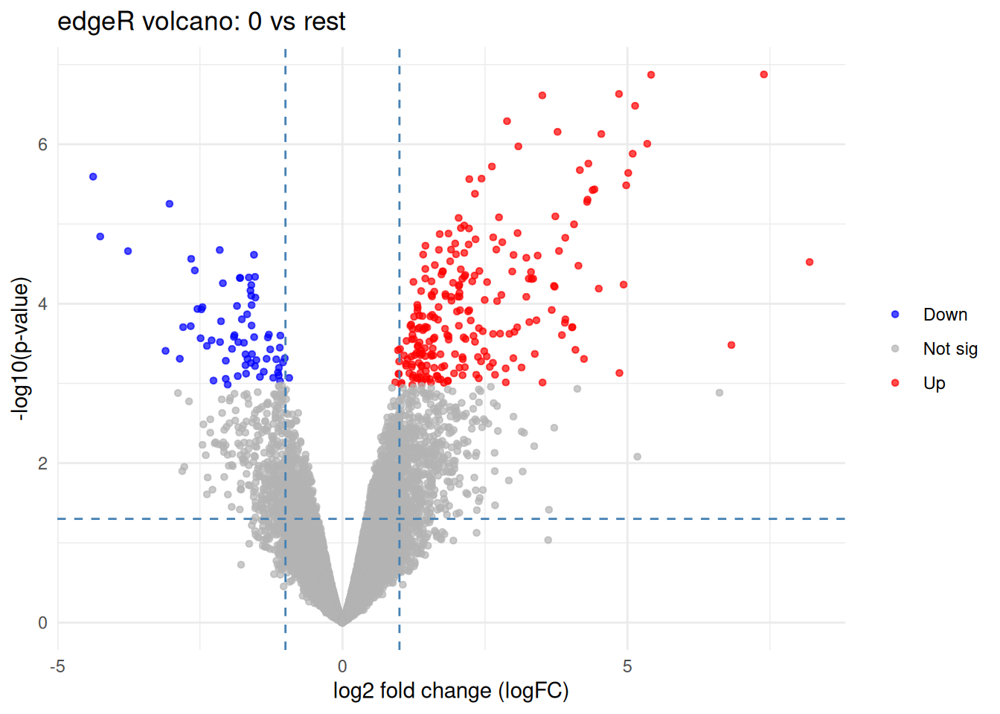

Chapter 10 Differential expression with edgeR (QLF) - Dataset 2
In this chapter we run edgeR using the recommended quasi-likelihood pipeline:
- Start from raw counts in a
DGEList - Estimate dispersions
- Fit a QL GLM
- Perform QL F-tests for contrasts of interest
We use the same additive design:
\[ \text{counts} \sim \text{status} + \text{patient} \]
obj <- readRDS("data/d2_qc_objects.rds")
dge_f <- obj$dge_f
meta <- obj$meta
mappings <- obj$mappings
design <- obj$design
# Contrasts
contr <- limma::makeContrasts(
`status0vs1` = status0 - (status1),
levels = design
)
# Estimate dispersion and fit QL model
edge <- edgeR::estimateDisp(dge_f, design)
fit <- edgeR::glmQLFit(edge, design)
10.2 Test: status 0 vs status 1
## Coefficient: 1*status0 -1*status1
## logFC logCPM F PValue FDR
## ENSG00000240429.1 -1.1832705 3.671905 29.34794 1.145213e-05 0.06015600
## ENSG00000138829.11 -1.9731998 3.991667 34.33254 1.308962e-05 0.06015600
## ENSG00000221867.8 3.1695213 3.122014 78.27375 1.742877e-05 0.06015600
## ENSG00000196604.12 -1.6168936 3.867533 28.54729 2.170176e-05 0.06015600
## ENSG00000151729.10 0.9484458 3.946041 27.69842 2.306418e-05 0.06015600
## ENSG00000157429.15 -0.7927040 3.495731 22.82475 3.820839e-05 0.08271539
## ENSG00000162998.4 -1.5853343 3.385425 26.06719 4.439903e-05 0.08271539
## ENSG00000240382.3 4.4279973 5.238228 31.24078 7.216175e-05 0.10844245
## ENSG00000013297.11 1.7036739 3.566455 22.57187 7.483951e-05 0.10844245
## ENSG00000211956.2 3.4714536 4.407648 24.55495 1.140482e-04 0.1416807510.3 Extract full results
tab_0_vs_1 <- edgeR::topTags(qlf_0_vs_1, n = Inf)$table %>% rownames_to_column("ensembl")
head(tab_0_vs_1)## ensembl logFC logCPM F PValue FDR
## 1 ENSG00000240429.1 -1.1832705 3.671905 29.34794 1.145213e-05 0.06015600
## 2 ENSG00000138829.11 -1.9731998 3.991667 34.33254 1.308962e-05 0.06015600
## 3 ENSG00000221867.8 3.1695213 3.122014 78.27375 1.742877e-05 0.06015600
## 4 ENSG00000196604.12 -1.6168936 3.867533 28.54729 2.170176e-05 0.06015600
## 5 ENSG00000151729.10 0.9484458 3.946041 27.69842 2.306418e-05 0.06015600
## 6 ENSG00000157429.15 -0.7927040 3.495731 22.82475 3.820839e-05 0.0827153910.4 Volcano plot of EdgeR results
volcano_df <- tab_0_vs_1 %>%
mutate(sig = FDR < 0.05)
ggplot(volcano_df, aes(x = logFC, y = -log10(PValue), color = sig)) +
geom_point(alpha = 0.6) +
theme_minimal() +
labs(
title = "EdgeR: 0 vs 1",
x = "log2 fold-change",
y = "-log10(p-value)"
)
10.6 Test: status 0 vs status 1
glmfit_0_vs_1 <- edgeR::glmFit(edge, design)
glmtest_0_vs_1 <- edgeR::glmLRT(fit, contrast = contr[, "status0vs1"])
edgeR::topTags(glmtest_0_vs_1)## Coefficient: 1*status0 -1*status1
## logFC logCPM LR PValue FDR
## ENSG00000240382.3 4.427997 5.238228 56.76214 4.918460e-14 6.414164e-10
## ENSG00000211947.2 3.587843 5.992715 55.36579 1.000628e-13 6.524593e-10
## ENSG00000211663.2 3.466166 4.997326 49.14025 2.382995e-12 1.035888e-08
## ENSG00000224650.2 3.397552 4.693907 39.47905 3.315983e-10 9.979335e-07
## ENSG00000211956.2 3.471454 4.407648 39.19962 3.826139e-10 9.979335e-07
## ENSG00000283029.1 -1.902125 16.790777 37.62136 8.589875e-10 1.867009e-06
## ENSG00000243290.3 3.048243 4.133752 36.58053 1.464875e-09 2.729062e-06
## ENSG00000276775.1 2.787666 5.156642 36.04396 1.929157e-09 3.144766e-06
## ENSG00000112936.18 2.768605 5.273166 35.43942 2.631083e-09 3.812439e-06
## ENSG00000102837.6 -4.896848 4.754747 34.84953 3.561951e-09 4.645140e-06glm_tab_0_vs_1 <- edgeR::topTags(glmtest_0_vs_1, n = Inf)$table %>% rownames_to_column("ensembl")
tab_glm <- glm_tab_0_vs_1 %>%
rownames_to_column("gene") %>%
mutate(
neglog10P = -log10(PValue),
direction = case_when(
FDR < 0.05 & logFC > 0 ~ "Up",
FDR < 0.05 & logFC < 0 ~ "Down",
TRUE ~ "Not sig"
)
)
ggplot(tab, aes(x = logFC, y = neglog10P)) +
geom_point(aes(color = direction), alpha = 0.7, size = 1.2) +
scale_color_manual(values = c(
"Up" = "red",
"Down" = "blue",
"Not sig" = "grey70"
)) +
geom_vline(xintercept = c(-1, 1), linetype = "dashed", color = "steelblue") +
geom_hline(yintercept = -log10(0.05), linetype = "dashed", color = "steelblue") +
theme_minimal() +
labs(
title = "edgeR volcano: 0 vs rest",
x = "log2 fold change (logFC)",
y = "-log10(p-value)",
color = NULL
)